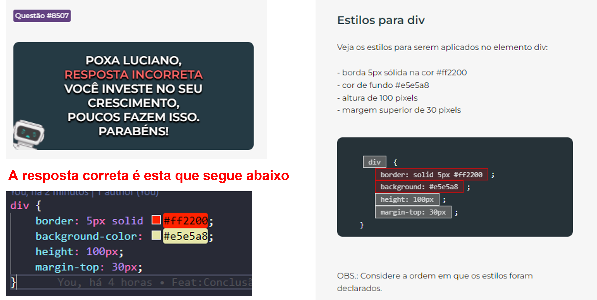

CSS: Propriedades -
Questão|8507
Estilos para div
Veja os estilos para serem aplicados no elemento div
borda 5px sólida na cor #ff2200
cor de fundo #e5e5a8
altura de 100 pixels
margem superior de 30 pixels
div{
border: 5px solid #ff2200;
background-color: #e5e5a8;
height: 100px;
margin-top: 30px;
{
